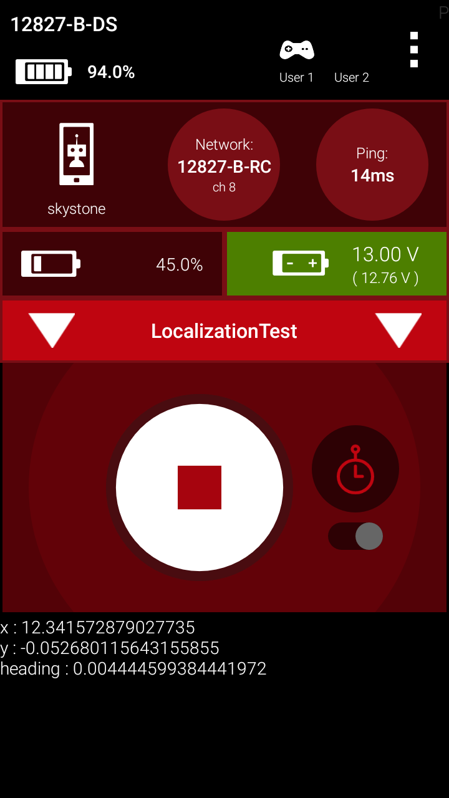
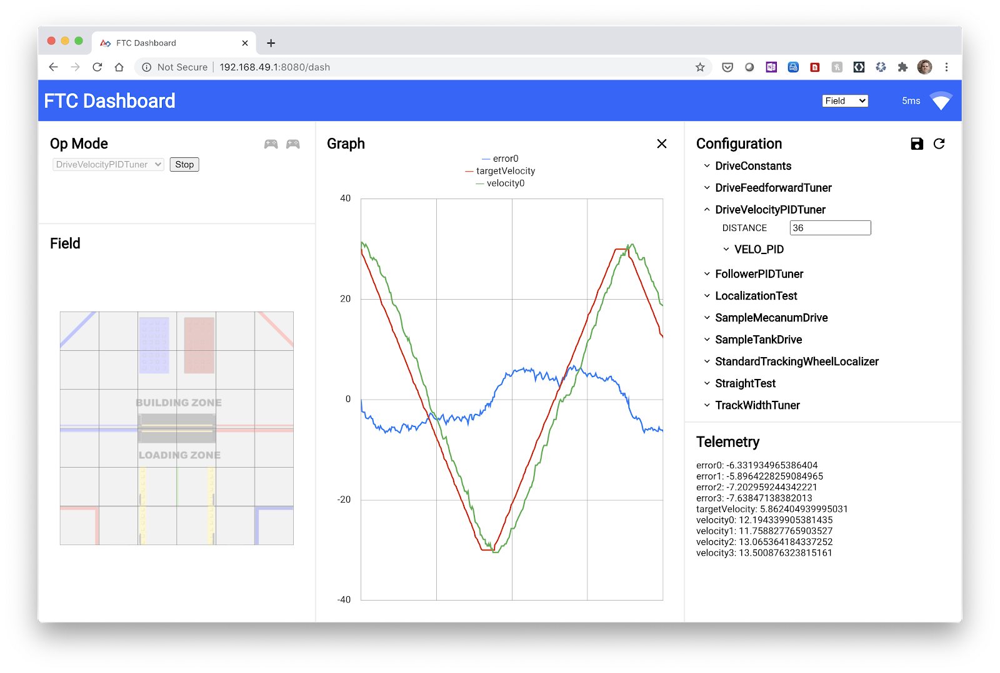
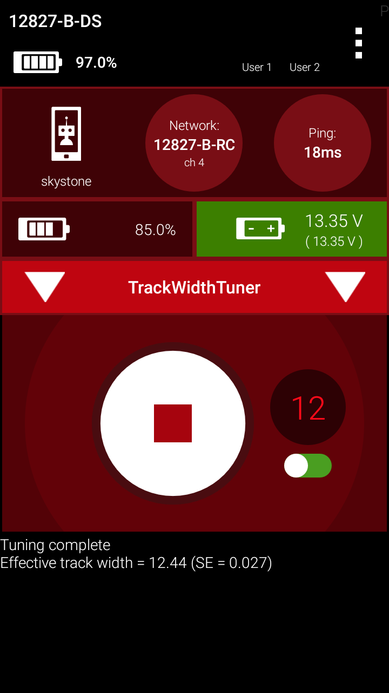
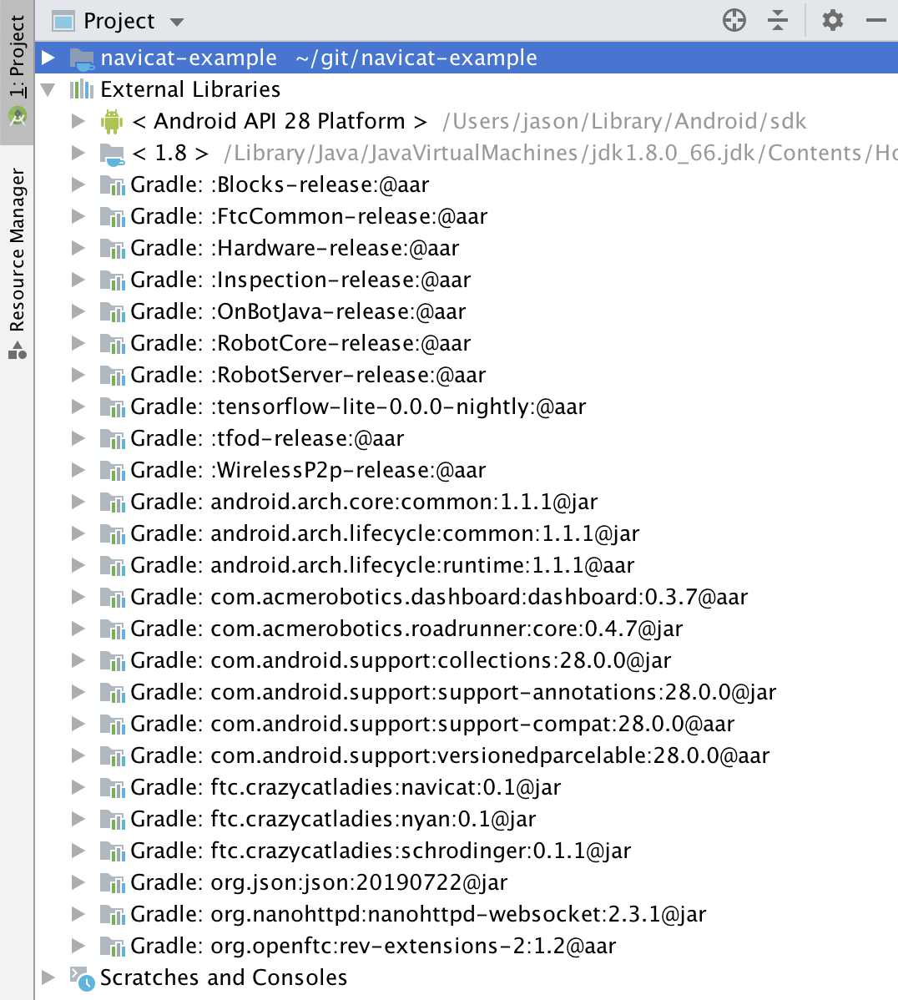

Last Updated: 2020-07-03
What is Navicat?
Navicat is a Java library for use in FTC robot control systems that helps with navigation. Navicat builds on two other libraries we have created: Schrodinger for state machines and Nyan for subsystems. It also uses the awesome motion planning library Road Runner, which was created by Team 8367 Acme Robotics.
What is Robot Navigation?
Navigation means a robot's ability to know its location (also called localization) and move to a target location. With a good navigation system, you can focus more on giving the robot instructions on where to go and what to do instead of how to get there.
About Road Runner
With Road Runner, you can specify complex paths for your robot to travel including start and finish orientation and position. Road Runner figures out how the motors should be powered to follow the path, and computes the position of the robot using odometry in order to make adjustments according to the actual speed and travel of the wheels. It also uses motion profiling to constrain the velocity, acceleration, and jerk of the robot to reduce wheel slippage and wear on robot parts. You can learn a lot more about Road Runner in this tour.
What does Navicat do?
By using Schrodinger, Nyan, & Navicat together, you can create autonomous op modes which have a powerful, easy-to-use, reliable navigation ability which is accessible as a subsystem and is part of a state machine framework which makes it easy for robot components to perform complex operations while navigating.
Currently, Navicat works only for robots with a mecanum drivetrain and no odometry free wheels. For the purpose of this codelab, the drivetrain motors must have encoders which are properly configured, also.
What you'll build
In this codelab, you're going to go through the steps required to setup Road Runner for your robot and create an op mode for an FTC robot that uses the Navicat library for navigation.
What you'll learn
- How to perform tuning to determine your robot's configuration values using the Road Runner Quickstart project
- How to install Navicat into your FTC Android Studio project
- How to create an autonomous op mode that uses Navicat
What you'll need
- A computer with Android Studio
- A robot with a mecanum drivetrain
Install Android Studio
If you do not already have Android Studio installed, follow the instructions for Installing Android Studio
Download the Road Runner Quickstart project
Download the Road Runner Quickstart project from https://github.com/acmerobotics/road-runner-quickstart/archive/master.zip. Unzip the file and open the project in Android Studio.
Find and open the DriveConstraints class.
Setting values related to motor speed and encoder
The first two configuration values we'll set are specific to the motor in your drive train and do not require testing. You can find these values in information provided by the motor manufacturer. TICKS_PER_REV refers to the encoder ticks per revolution of the motor and MAX_RPM refers to the maximum RPMs of the motor itself.
DriveConstants.java - lines 24-25 (values for HD Hex / Neverest / Yellow Jacket motors)
public static final double TICKS_PER_REV = 28;
public static final double MAX_RPM = 6000;Setting values related to drivetrain
The next three values can all be determined by examining the drivetrain: the radius of the drive wheels, the gear ratio which is applied between the motor and the wheels, and the track width between left and right wheels. Please note that the gear ratio should include any gearbox which is mounted onto the motor. For example, a Neverest 40 motor with a mounted 80-tooth gear driving a 40-tooth gear on the wheel axle would have a total gear ratio of 20:1. The example below shows a simple case of a "20:1" gearbox, such as the Rev or AndyMark orbitals. These have an actual ratio of 19.2:1.
DriveConstants.java - lines 42-44 - for REV 75mm mecanum wheel and "20:1" gearbox
public static double WHEEL_RADIUS = 1.475; // in
public static double GEAR_RATIO = 1 / 19.2; // output (wheel) speed / input (motor) speed
public static double TRACK_WIDTH = 14; // inModifications to match robot configuration
Next, we'll need to make a few modifications to the SimpleMecanumDrive class. We'll update the motor names and imu name to match the configuration for your robot, and reverse the direction for two of the motors.
If your robot configuration has a different name for the imu, replace the string in line 108. Similarly, update the motor names in lines 117-120 to match your robot configuration.
SampleMecanumDrive.java - lines 108 - 120
imu = hardwareMap.get(BNO055IMU.class, "imu");
BNO055IMU.Parameters parameters = new BNO055IMU.Parameters();
parameters.angleUnit = BNO055IMU.AngleUnit.RADIANS;
imu.initialize(parameters);
// TODO: if your hub is mounted vertically, remap the IMU axes so that the z-axis points
// upward (normal to the floor) using a command like the following:
// BNO055IMUUtil.remapAxes(imu, AxesOrder.XYZ, AxesSigns.NPN);
leftFront = hardwareMap.get(DcMotorEx.class, "leftFront");
leftRear = hardwareMap.get(DcMotorEx.class, "leftRear");
rightRear = hardwareMap.get(DcMotorEx.class, "rightRear");
rightFront = hardwareMap.get(DcMotorEx.class, "rightFront");Insert lines 141-142 as shown below to reverse the direction of the two right motors since these face the opposite direction from the left motors.
SampleMecanumDrive.java - line 140 + inserted lines 141-142
// TODO: reverse any motors using DcMotor.setDirection()
rightFront.setDirection(DcMotorSimple.Direction.REVERSE);
rightRear.setDirection(DcMotorSimple.Direction.REVERSE);Localization Test
With all the necessary DriveConstant values set, we're ready to run the first test, LocalizationTest. While this op mode is running and you drive the robot, Road Runner is computing the robot's position and heading based on the DriveConstants you provided earlier (gear ratio, wheel size, etc.) in combination with the information about the activity of the motors from the motor encoders. Make sure that the values displayed correspond to the movement of the robot as you drive.
In this example, we have driven the robot straight for 12 inches, and we see that reflected on the Driver Station phone.

Drive Velocity PID Test
If you haven't heard of Proportional-Integral-Derivative (PID) Control before, it probably sounds really complex. But, the basic concepts are pretty simple. If we take driving as an example, proportionate control would have you turn the steering wheel more when the car is further out of it's lane. Integral control would have you turn the steering wheel more if it doesn't respond enough when you turn it less. Derivative control would have you turn the steering wheel more if the car is moving further out of its lane.
The next test is about making sure that the motor controllers in the expansion (or control) hub has PID constants which cause the motors to move precisely (as much as possible) at the speeds that Road Runner computes for navigating along the paths that are specified. So, if the motor needs to speed up a lot, the motor controller should set the power much higher. If the amount of power supplied isn't making the motor goes fast enough, it should be increased, etc.
The test has the robot repeatedly travel back and forth over a distance of 72 inches. If you don't have that much room available, change the distance to a smaller number (of inches).
While running the test, you'll use the FTC Dashboard at http://192.168.49.1:8080/dash to see how closely the actual motor velocity (green below) matches the target (red below). Change the kP, kI, & kD parameters under VELO_PID in the dashboard to reduce the distance between the red & green lines (i.e. error). The official Quickstart tuning guide describes the process as the following:
- Increase kP until any phase lag is eliminated. Concurrently increase kD as necessary to mitigate oscillations.
- Add kI (or adjust kF) until the steady state/constant velocity plateaus are reached.
- Back off kP and kD a little until the response is less oscillatory (but without lag).
https://acme-robotics.gitbook.io/road-runner/quickstart/tuning#drive-velocity-pid
If you struggle with finding the best values, see how well you can do by just adjusting kP, working your way up from a low value slowly.

When you have determined the values for kP, kI, & kD, put them in the MOTOR_VELO_PID constant in DriveConstants:
DriveConstants.java - line 32 (your values will be different)
public static final PIDCoefficients MOTOR_VELO_PID = new PIDCoefficients(15.0, 0.0, 0.0);Straight Test
The next test will validate the values set by the preceding steps. StraightTest will use RoadRunner to plan and execute a drive 60 inches straight ahead. The robot should land within a few inches of the target distance.
Drive Track Width
TrackWidthTuner will calculate the best value to use for your robot's TRACK_WIDTH parameter by turning the robot and monitoring the actual heading as reported by the IMU.
The computed track width is displayed as telemetry on the Driver Station. Use this value to replace the one you entered into DriveConstants.java.

Turn Test
TurnTest will allow you to verify that the calculated TRACK_WIDTH is suitable for the turning characteristics of your robot. Try changing the ANGLE constant in TurnTest.java to several different values and observing how well the robot matches after running the op mode.
Spline Test
Now that you've done all the tuning to configure Road Runner for your robot, SplineTest will show off the ability that Road Runner provides to smoothly execute complex paths.
Follower PID
Up until this point, Road Runner has been keeping track of the estimated position of the robot during tests, but hasn't used this information to affect it's movement. FollowerPIDTuner is your opportunity to turn on and tune the follower capability which uses the robot's position as feedback to make corrections to the robot's movements. Find the TRANSLATIONAL_PID and HEADING_PID constants in the SampleMecanumDrive.java class and try low single-digit values for kP to improve the robot's ability to execute the square pattern accurately.
Create the project
If you are familiar with git, create a new clone of the FTC project repository on your computer. Otherwise, just follow these instructions for Downloading the Android Studio Project Folder
Adding the crazycatladies Maven repository
You'll need to let Android Studio (the gradle build system, really) know from where it can download the schrodinger, nyan, and navicat libraries. Add maven { url 'https://dl.bintray.com/crazycatladies/maven' } to the repositories section at the bottom of the build.gradle file in the root folder of your project.
build.gradle
/**
* Top-level build file for ftc_app project.
*
* It is extraordinarily rare that you will ever need to edit this file.
*/
buildscript {
repositories {
google()
jcenter()
}
dependencies {
classpath 'com.android.tools.build:gradle:3.4.1'
}
}
// This is now required because aapt2 has to be downloaded from the
// google() repository beginning with version 3.2 of the Android Gradle Plugin
allprojects {
repositories {
google()
jcenter()
maven { url 'https://dl.bintray.com/crazycatladies/maven' }
}
}Add the schrodinger, nyan, navicat, and Road Runner dependencies
You'll make your project dependent on Schrodinger, Nyan, and Navicat, which will cause Android Studio (gradle, really) to download the library, by adding six new entries (shown below) to the end of the dependencies section in TeamCode/build.release.gradle
TeamCode/build.release.gradle
dependencies {
implementation project(':FtcRobotController')
implementation (name: 'RobotCore-release', ext: 'aar')
implementation (name: 'Hardware-release', ext: 'aar')
implementation (name: 'FtcCommon-release', ext: 'aar')
implementation (name: 'WirelessP2p-release', ext:'aar')
implementation (name: 'tfod-release', ext:'aar')
implementation (name: 'tensorflow-lite-0.0.0-nightly', ext:'aar')
implementation 'com.acmerobotics.roadrunner:core:0.4.7'
implementation 'org.openftc:rev-extensions-2:1.2'
implementation 'com.acmerobotics.dashboard:dashboard:0.3.7'
implementation 'ftc.crazycatladies:schrodinger:0.1.4'
implementation 'ftc.crazycatladies:nyan:0.1.1'
implementation 'ftc.crazycatladies:navicat:0.1.15'
}Update build settings to enable Java 8
Nyan uses Java 8 features, and you'll probably want to do the same in your own code. You can enable Java 8 by changing the compileOptions section in build.common.gradle (in the root folder of the project):
compileOptions {
sourceCompatibility JavaVersion.VERSION_1_8
targetCompatibility JavaVersion.VERSION_1_8
}Update gradle
After changing and saving these files, you should be able to update gradle by clicking "Sync Now" in the bar which appears at the top of these files:

If everything has gone well, your project will now reference the downloaded schrodinger, nyan, navicat, and roadrunner external libraries, which you can see in the "Project" view of the Project window:

Add Drive Constants from Tuning
If you've created a new project for trying out Navicat, copy the DriveConstants.java file from the Quick Start project into your new project.
Create an Autonomous Op Mode
If you've completed the Nyan codelab, you're aware that Nyan provides a framework for creating Autonomous op modes that cuts down on the amount of code that you need to write. Navicat takes this further with base classes for your autonomous op mode and top-level robot class which has navigation features built in. The result is that you can have a navigation-enabled autonomous op mode with only the 27 lines of code shown here:
AwesomeAuto.java
package org.firstinspires.ftc.teamcode;
import com.acmerobotics.roadrunner.control.PIDCoefficients;
import com.qualcomm.robotcore.eventloop.opmode.Autonomous;
import ftc.crazycatladies.navicat.navigation.*;
import ftc.crazycatladies.schrodinger.state.*;
@Autonomous(name = "AwesomeAuto")
public class AwesomeAuto extends AbstractNavAuto {
PIDCoefficients TRANSLATIONAL_PID = new PIDCoefficients(3, 0, 0);
PIDCoefficients HEADING_PID = new PIDCoefficients(3, 0, 0);
public AwesomeAuto() {
robot = navRobot = new NavRobot(true,
DriveConstants.class, TRANSLATIONAL_PID, HEADING_PID,
new MecanumDrive.DriveMotorConfig("FL", 2, "FR", 2,
"BL", 2, "BR", 2),
"imu", "imu 1");
}
@Override
protected StateMachine stateMachine() {
StateMachine sm = new StateMachine("AwesomeAutoSM");
return sm.init();
}
}You'll recognize the TRANSLATIONAL_PID & HEADING_PID constants from FollowerPIDTuner. Replace the values with the ones that you have determined for your own robot. You'll also want to use the appropriate drive motor names for you robot in place of "FL", "FR", "BL", and "BR", along with the hub number for each (in place of "2"). Update "imu" & "imu 1" if your have different names, and replace "imu 1" with null if you have only a single control/expansion hub.
This op mode won't do anything interesting, but try it out to make sure that there aren't any errors, and then we'll make it more interesting.
In the Nyan codelab, you'll see a description of how you can orchestrate the actions of your robot in an autonomous op mode using a state machine. That's exactly what we'll do here by adding to the stateMachine() method:
AwesomeAuto.java
@Override
protected StateMachine stateMachine() {
StateMachine sm = new StateMachine("AwesomeAutoSM");
sm.once((state, context) -> {
navRobot.getNav().setPoseEstimate(0, 0, 0);
go(splineTo(30, 30, 0));
// (optional) start operations in subsystem state machines
});
sm.repeat(waitForNav());
sm.once((state, context) -> {
go(slowTo(30, -30, 0));
});
sm.repeat(waitForNav());
sm.once((state, context) -> {
go(reverseSplineTo(0, 0, 180));
});
sm.repeat(waitForNav());
sm.once((state, context) -> {
go(to(30, 30, 90));
});
sm.repeat(waitForNav());
sm.once((state, context) -> {
go(to(30, -30, 0));
});
sm.repeat(waitForNav());
sm.once((state, context) -> {
go(to(0, 0, -90));
});
sm.repeat(waitForNav());
return sm.init();
}Note that several different navigation methods are used to create the complex path that the robot follows: splineTo, slowTo, reverseSplineTo, and to. Each of these methods takes a target pose (x, y, & heading). Although Road Runner natively uses radians, Navicat accepts degree values to make things easier.